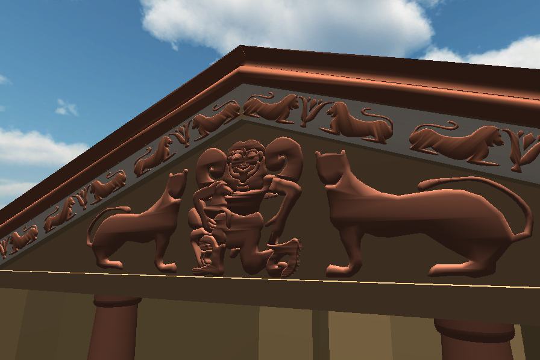

PEDIMENTAL GROUP
Fragments of the terracotta design elements were found, allowing us to piece together an overall image of the structure. The felines flanking a gorgon is a typical motif. The Temple of Artemis at Corfu has a similar pedimental group. By using contemporaneous comparanda we have determined what the pedimental group would have looked like. There are certain elements (such as cavettos, scales, and colors) that are missing, which we hope to able to put in soon. Winter, Symbols of Wealth, 2009. Hopkins, 2010.



SIMA REVETMENTS
Only a small fragment of the lion pattern remains. It seems probable from the placement of the tail and the tip of foliage connected to the lion’s nose that the design was the repetition of two lions facing a lotus. Winter, Symbols of Wealth, 2009. Hopkins, 2010.


ACROTERION
There is a bull acroterion on the top of the roof that we were unable to build due to time constraints. We have a basic recreation of what it should look like; it stands on a ridge tile. Winter, The Evolution of Bases for Acroteria in Etruria and Latium (640/630- 510 B.C.), 2009. Winter, New light on the production of decorated roofs of the 6th c. B.C. at sites in and around Rome,2009.

WOODEN FRAMEWORK
There were two widely used ceiling systems at the time: the truss and the prop-and-lintel. The truss needs no interior colonnades and spans wide areas without support from below. Sant’Omobono is a simple temple with no colonnades; it follows that that the framework and ceiling should reflect this simplicity in design as well. There is also no evidence for an attic, so therefore we have made the framework entirely visible. Hodge, The Woodwork of Greek Roofs, 1960.
BACK FACADE
No remains of the back facade were recorded, so we have left the decoration out.